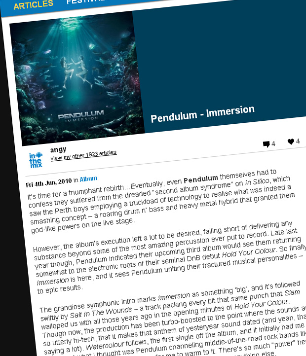

Pendulum - Immersion
{kind=link}

It’s time for a triumphant rebirth…Eventually, even Pendulum themselves had to confess they suffered from the dreaded “second album syndrome” on In Silico, which saw the Perth boys employing a truckload of technology to realise what was indeed a smashing concept – a roaring drum n’ bass and heavy metal hybrid that granted them god-like powers on the live stage.
However, the album’s execution left a lot to be desired, failing short of delivering any substance beyond some of the most amazing percussion ever put to record. Late last year though, Pendulum indicated their upcoming third album would see them returning somewhat to the electronic roots of their seminal DnB debut Hold Your Colour. So finally Immersion is here, and it sees Pendulum uniting their fractured musical personalities – to epic results.
The grandiose symphonic intro marks Immersion as something ‘big’, and it’s followed swiftly by Salt In The Wounds – a track packing every bit that same punch that Slam walloped us with all those years ago in the opening minutes of Hold Your Colour. Though now, the production has been turbo-boosted to the point where the sounds are so utterly hi-tech, that it makes that anthem of yesteryear sound dated (and yeah, that’s saying a lot). Watercolour follows, the first single off the album, and it initially had me wincing at what I thought was Pendulum channeling middle-of-the-road rock bands like Creed. However, it didn’t take long for me to warm to it. There’s so much “power” here, they’re more channelling the brute force of a hurricane than anything else.
Immersion really does position itself at the exact midpoint between Pendulum’s first two albums – yep, the heavy DnB-style electronics are back, and the album is sporting some of the most insanely polished production you’re likely to hear on a release this year. These are a bunch of lads who have really mastered the technology; but accompanying this is a sophisticated approach to songwriting, melody and structure that’s better realised than anything we heard on In Silico. It shows they really did learn their lessons on album #2, as well as confirming they’re an act always destined to deliver more than straight drum n’ bass records for the ‘heads.
If you were never into the cheesy rock theatrics, or those bouncy high-pitched melodies, then you’ll probably still find a lot to dislike here. It’s just that this time, they haven’t traded in their electronic credentials. Immersion mashes their classic drum n’ bass aesthetics into heavy metal bombast, for an end result that’s so honed, polished and perfected that you’ll wonder whether there’s anywhere left for Pendulum to even go.
The musical scope is grand. The rollicking Crush is simply as good as a dance/metal crossover is ever going to get, while Under The Waves sees Pendulum pushing the power drum n’ bass sound to its absolute limits. Self vs. Self is straight-up heavy metal from the future, while with Comprachicos they dip their toes in Nine Inch Nails style industrial noise, before rinsing it out again with some scorching drum n’ bass. Set me On Fire is dubstep, Pendulum style – with plenty of balls – and then there’s the epic two-part romp that is The Island. ‘Part I’ is a rousing vocal anthem marching onward at a slower slightly pace than Pendulum’s typical barrage of broken beats, while ‘Part 2’ extends the musical motif, but this time spiralling into a squelchy acid bath of squealing electronics.
All up, Immersion is Pendulum’s most diverse, focussed and realised album to date. While In Silico had the concept without the execution, they’ve nailed the tone here. It’s a body of work that’s technologically astounding while also showcasing better songwriting than anyone would have guessed they were capable of.
Its only flaw is that it’s so focused in what it’s trying to be, it comes off as a little detached and aloof. It lacks the emotional grip they landed so effortlessly on Hold Your Colour; but in many other respects, Immersion scales heights they never even got close to on their debut. They haven’t attained musical greatness yet, but they might just get there on album number four.
Immersion is out now on Warner Music.